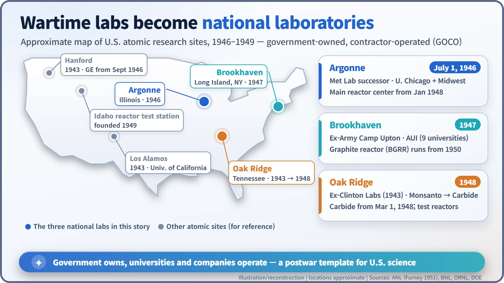
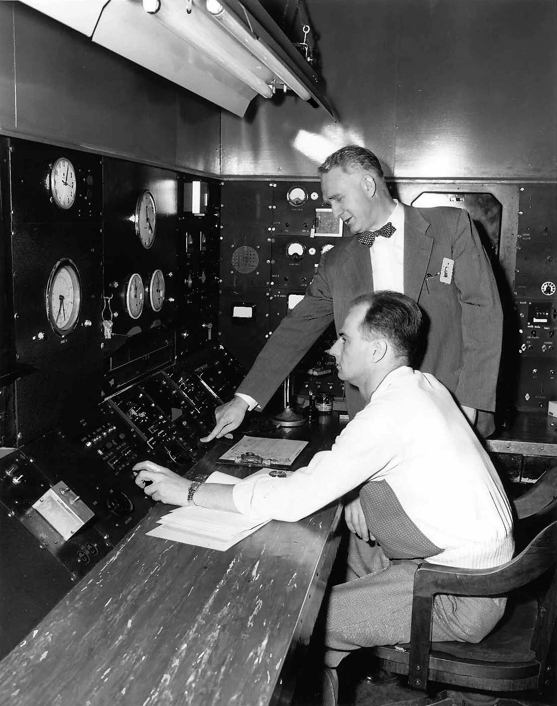
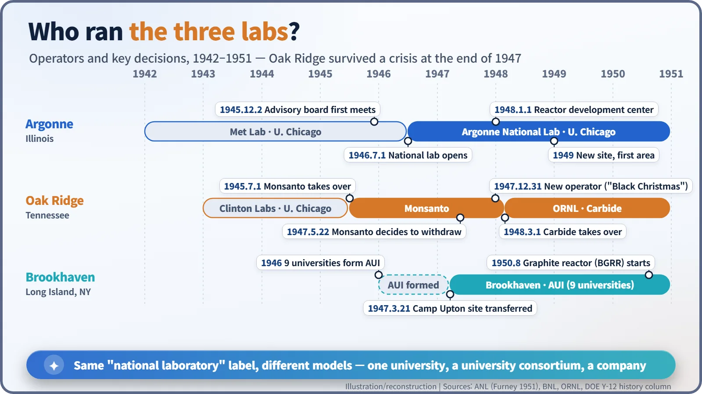

Nuclear History · 131
The Labs That Took Off Their Uniforms — How Argonne, Brookhaven and Oak Ridge Became America's First National Laboratories
A university, a consortium of nine universities and a chemical company each took a different road to the same new institution, and Oak Ridge was saved only on New Year's Eve 1947.
When the Second World War ended, the Manhattan Project's laboratories lost their single purpose. Between 1946 and 1948 three of them were remade as "national laboratories", owned by the government but run by a university, a university consortium or a company: Argonne in Illinois, Brookhaven on Long Island and Oak Ridge in Tennessee. Each took a different road, and Oak Ridge nearly did not survive.
The war ended, and so did the job description
In October 1951, new employees at Argonne National Laboratory each received a slim employee handbook. Its history section was written by Lester C. Furney, staff assistant to the laboratory director, and its last paragraph opens with a line that sounds almost like a welcome mat: "This, then, is your Laboratory." A few pages earlier, Furney listed the three questions the laboratory had been forced to answer once the war was over. What should it do now? Could it keep the people needed to do it? And where, physically, would it work? [1]
After August 1945 the bomb, the project's single overriding goal, had been reached. Yet the new sciences it had created, such as reactor physics, radiochemistry and radiation biology, were only just getting started. In Furney's words, throughout 1945 the laboratory's future was uncertain because it had no long-range objective. Scientists began drifting back to their universities, and much of the equipment sat in university buildings and temporary huts.
The answer that emerged was a new kind of institution: the national laboratory. The government would own the facilities and pay the bills, while a university or a company would run the place under contract. The arrangement is known as GOCO, "government-owned, contractor-operated". Think of a publicly owned building handed to a professional manager. Yet the three laboratories in this story reached that model by very different roads.

Argonne: Chicago's "Metallurgical Laboratory" moves house
Argonne's roots go back to January 1942, when the University of Chicago set up the Metallurgical Laboratory under a government contract. On 2 December 1945, the third anniversary of the first self-sustaining chain reaction, an advisory board of leading Midwestern scientists held its first meeting. In May 1946 the region's major universities and research institutions endorsed an organisation plan and became the laboratory's founding "participating institutions". On 1 July 1946 Argonne National Laboratory officially began its existence, with Walter H. Zinn (1906–2000) as director. It was the first U.S. laboratory to carry the "national laboratory" title. [1]
The remaining problem was a home. The wartime site in the woods southwest of Chicago was forest preserve land, so the laboratory could not stay there for good. In January 1947 the new Atomic Energy Commission (AEC) approved a new site in DuPage County, and ground for the first building was broken in 1948. One story from those moving days survives in an employee's recollection: on Valentine's Day 1949, freezing rain kept the commuter bus from climbing the hill to the new site, so Zinn drove about fifteen staff members to the laboratory in his own Chevrolet and put them up in the guest house. [1]

Brookhaven: a laboratory founded by nine universities
The Northeast had a different problem. Once the Manhattan Project left, the region's universities had no access to big machines such as research reactors. Physicists I. I. Rabi (1898–1988) of Columbia University and Norman F. Ramsey Jr. pushed for a shared facility, and in 1946 nine universities formed a non-profit corporation, Associated Universities, Inc. (AUI): Columbia, Cornell, Harvard, Johns Hopkins, MIT, Princeton, the University of Pennsylvania, Rochester and Yale. [2]
The site chosen was Camp Upton, a former Army training camp on Long Island. On 21 March 1947 the site was transferred to the AEC and Brookhaven National Laboratory was under way (some sources date the start to August 1947, when operations began). Its Brookhaven Graphite Research Reactor (BGRR) started up in August 1950, and the laboratory describes it as "the first peace-time reactor built in the United States following World War II". Note the careful wording: it was not the world's first research reactor, since wartime piles such as X-10 and CP-3 came earlier. [3]
Oak Ridge: a reprieve on New Year's Eve
The closest call came in Tennessee, at Clinton Laboratories, home of the X-10 graphite reactor. On 1 July 1945 the University of Chicago handed its operation to Monsanto Chemical Company, and Eugene Wigner took a year's leave from Princeton to serve as director of research. But the AEC's General Advisory Committee was reluctant to build up a laboratory in remote East Tennessee, and on 22 May 1947 Monsanto decided to withdraw as operator. A later history quotes the committee's chairman, J. Robert Oppenheimer: "Most of us think that the evidence is in that Clinton will not live even if it is built up." [4] [5]
Worse was to come. Late in 1947 the AEC decided to concentrate reactor development at Argonne, leaving Oak Ridge without a clear mission. People at the laboratory later called this period "Black Christmas", a staff nickname rather than an official term. Then, on 31 December 1947, AEC officials came to Oak Ridge in person to announce that Carbide and Carbon Chemicals Corporation, part of Union Carbide, would run the laboratory from 1 March 1948. The laboratory survived and in 1948 took the name Oak Ridge National Laboratory (ORNL). [5]
The way forward was found by a young physicist, Alvin M. Weinberg (1915–2006). He went to see Zinn at Argonne and struck a "gentlemen's agreement": Argonne would develop power reactors, while Oak Ridge would concentrate on specialised research and test reactors. Weinberg became ORNL's director in 1955 and led it for some eighteen years. [6]

Rivals that learned to divide the work
The three laboratories shared a title but not a management model. Argonne was run by one university with a group of regional partners, Brookhaven by a university consortium, and Oak Ridge by a company. They competed for assignments, yet in the end they split the field between them: reactor development, basic research, and test reactors and isotopes. From 1 January 1948 Argonne was the AEC's main reactor development centre. [1]
The template has lasted. Today the U.S. Department of Energy oversees 17 national laboratories, most of them still government-owned and contractor-operated. Instead of disbanding, the scientists gathered for the war received a new business card, "the nation's laboratory", and that is a large part of why postwar nuclear research moved so quickly for a generation. [7]